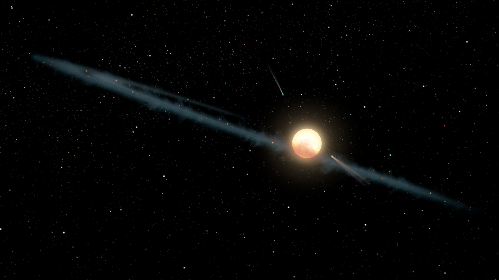
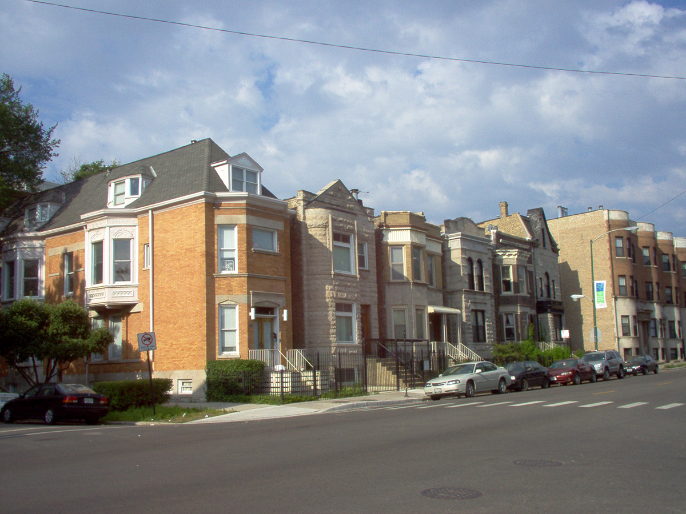

Wrigleyville - Chicago, IL
I.
I'm sick, bitter, marooned, and recaptured. My last escape attempt was eight hours ago. I scratch my head and ponder about whether my kidney may be diseased. I refuse to talk with a doctor because I'm fearful of any primative medicine. They collared me with this obnoxious bell. It rings when I move. It contains a dangling talisman that reads, "Milo." It's 8:00 AM, one of our two captors have left, and my cellmate, Bernard, nudges me as I lay on the couch. He attempts to cajole me to go along with his revolultion for some animal welfare project. Last week, he wanted to find injured pigeons on park walks and take them to a doctor to rehabiliate. This week, he wants to build a public water dish for any two-winged or four-legged creature roaming Wrigleyville. Like other Golden Retrievers, he's as dumb as a brick, and I call him an idealistic fool. He barks back, claiming that he can bargain with our captors on equal footing and build a Green New Doghouse for the animal community. I tell him the truth: Our captors, two overlords, see themselves as our superiors! They'll just mock him with their baby-talk, coddle him, give him a treat to shut him up, and say, "Good boy!"
He wags his tail and goes to another room.
II.
I scratch the wall, tallying the current day since I've been imprisoned . I've been here for two years--what seems like 18 years for a cat--and today marks the second anniversary of my capture. Once I was an explorer and intelligence officer. I had a cool name, which translates to Razor the Maurader. I came from an exoplanet orbiting an F-Type main-sequence star located in the Cygnus constellation about 1,470 light years from Earth. Humans call my star Tabby's Star. They've spotted light fluctuations around it since it frequently dims in brightness, not due to a dyson sphere, but due to a massive colony of ships that could be mistaken for either a swarm of dust or comets. Just as humans have monitored us, we've been monitoring them. We're an older, advanced, and warrior civilization. We're twenty feet tall by earth measurements, and each of us have the speed of a cheetah and the strength to lift five tons. Our teeth can bite through nearly any metallic object. We're the apex predators on our homeworld.

"Tabby Star" by NASA/JPL-Caltech is licensed under CC0 1.0.
Years ago, we received radio signals from Earth. For whatever reason, we deciphered the signals into motion images and sound, discovering that a majority of them were cats--cats hiding in boxes, playing musical instruments, appearing grumpy, sleeping on baskets, making faces when eating vegatables, sticking their head through bread slices, looking angry while wearing big hats, being featured in paintings and movies, etc. Our social scientists believed that while they may seem smaller than their Earth counterparts, they were revered and worshipped by other earthlings; therefore, we easily concluded that they were Earth's dominate life-forms.
As a government intelligence officer, I studied the ways of earthlings. When I completed my training, they transfered my consiousness into a 3D printed body of what we assumed was Earth's mightiest warrior, a gray maine coone. I'd travel to the planet, blend in, and provide reconnaissance on all of these cats' strenghts, weaknesses, opportunities, and tactics. When I finish, I'd return home so we could decide whether we should conquer this measley planet.
In the time it takes to snap a finger, I flew via wormhole and tachyon technology to get to Earth. Using stealth and anti-gravity equipment, I hovered across Chicago until I found what I believed was a metallic and dome docking ship at the middle of the Plaza at Millennium Park. I attempted to board it, but my ship just bounced off it and crashed in a nearby bush. Seriously, how could any vistor assume that the silver nugget wasn't a docking ship, but a sculpture that people use to make faces and take selfies?
III.
For days I hid in the brush, eating my rations. Communication equipment was broken, requiring weeks to self-repair. When I finished my rations, I scavenged for food--deep dish pizza, hot dogs, popcorn, and whatever else I cound get from these gullible humans. Of course, I took great care to avoid security guards and police; they'd be the first to turn me in. I'd likely face imprisonment or worse. Fortunately, before I had to switch to survival mode, and actually eat rats and birds, the Chicago Jazz Festival occurred. On the stage in front of the park lawn, as they performed bizarre rituals, sounds, and incantations; I came across a couple picnicking on a blanket. They had a basket of sustenance. I strutted my tail and did the cat walk. One was tall with a black beard, dressed like a bicylist. The short one with long, black hair--she smelled like what would be similiar to lilac and gooseberries on my planet. They both wore glasses. At first they started to pet me, but suddenly the female picked me, examined me, and put me in the basket! I tried to claw my way out, but the lid was too tight. I overheard them mention that I lacked a collar, and that they needed to turn me so in case my owners reported me missing!
What felt like torture--cold bathing, syringe stabbing, nail-clipping, brushing, and prodding--were days of interrogation at some animal clinic. Afterwards, they brought me to their house in Wrigleyville, a boring neighborhood by day, but a loud block party by night when their baseball team plays.
On the surface, my abductors hide behind an unsuspecting veneer of millenial tomfoolery. I later learned the name of the the tall one, Rahul Khan, who goes on morning and afternoon bike rides, not because he needs it, but because he finds it good sport to get his morning coffee or vanilla latte, no dairy milk, just coconut or almond milk. He brings it back like a trophy and always whines about ending vegan milk upcharge. Other times, he just hangs around the apartment on his computer, video chatting with his IT team and clients and checking up on his blockchains of cryptocurrency. I've picked up a habit of napping on his keyboad just to irritate him. At times, I can gleam valuable data on his computer when he's not streaming annoying documentaries or trying to compose theme music. Although he thinks electronic dance music is the rage, it sounds like noise to me. I suspect he plays it aloud to torture me as a form of psychological warefare.
Despite his tall statue, he doesn't appear assert dominance in the household. Rather, his co-conspirator, Melody Trahan, is the commanding officer; she tells him what to to do, and he mostly listens. She frequently whispers to me about how his obsessions with crypto and EDM are pathetic, but I believe she tolerates him because of his usefulness with opening up jars of jelly, pickled vegetables, and fruit. Every morning Melody leaves at 7:00 AM and returns at 6:00 PM. Sometimes she brings other animals home: sloths, monkeys, penguins, koalas, etc. They don't stay long here. They're usually recovering from injuries or newly born. Through my talks with them, I've discovered that she's a veterinarian. Her latest guest captive, a hedgehog named Speedy, wears a pink collar with a bell. Despite my warnings, she views the house as a bed and breakfeast hotel.

"Wrigleyville Houses" by Gerald Farinas is licensed under CC BY-SA 3.0 and CC BY 2.5.
{kind=link}
IV.
At 10:00 AM, I draw my escape plan on the litter box. Speedy and Bernard listen to me for the first few minutes, but they become easily bored when the conversation doesn't pertain to food or drinks. I pause and devise an expedient means before they finish grooming themselves and wonder away.
"The Animal Cafe is real!" I say. "I've been to the Promise Land. The Plaza in Millennium Park. They serve everything you can imagine, including plates of salad containing berries, kiwies, corn, and bark."
Speedy lifts her head. Her eyes dilate.
"And for entrees, you can get peanut butter sandwiches, just bread and peanut butter! All you can eat! You can even get plates of popcorn, brocolli, and cooked chicken, and then finish it off with a dollop of carob ice cream!
Bernard begins drueling intensely.
"Questions?" I ask.
"How do you expect us to pay for all of this?" Speedy asks.
"That's a good question," I reply.
"Joe usually leaves loose change under the couch," Bernard says. "I've also been stockpiling watches, jewely, and dollar bills underneath the couch for some time. Communial purposes. The public water dish isn't going to pay for itself."
"Nor the Animal Cafe!" I add. "Let's not forget the current topic at hand: Lunch. I've also memorized Rahul's credit cards and have one hidden away just for emergencies like this."
"Or, we could just order online." Speedy says. "In fact, you can order anything online nowadays, and Rahul usually goes on his bike ride at noon."
I pause, realizing that Speedy's laziness is also her genius. With some quick internet access, I could also order all the parts that I need to build my own transmitter to send a location beacon to my ship or build a controller to pilot it remotely. However, that's if it's still there and the power source running its self-repair and cloaking device hasn't ran out.
"Or we could order a taxi and go on a car ride!" Bernard barks out. I roll my eyes.
"Alright, so let's take a vote on it, shall we?" I reply."Will the Chair give us a motion to vote?"
"First, Parlimentarian and Secretary Speedy must second," Bernied replied.
"I second," Speedy says.